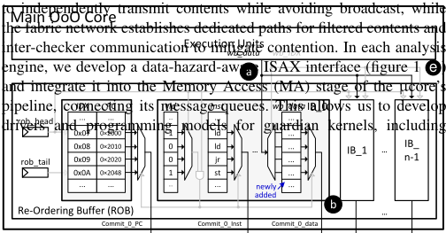
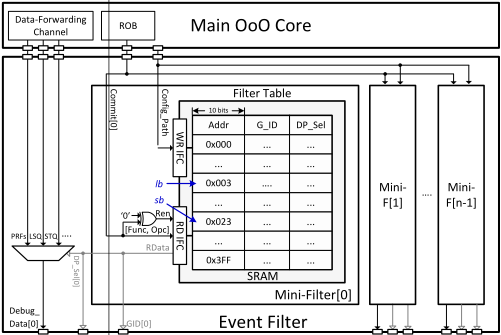
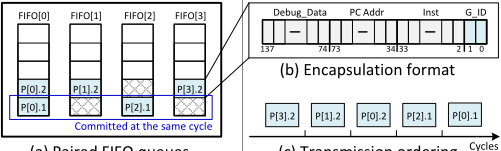
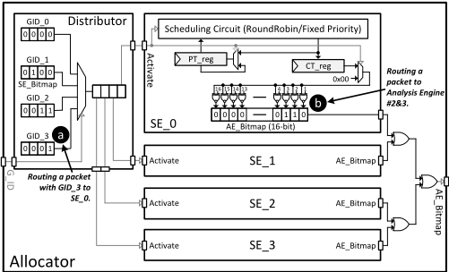
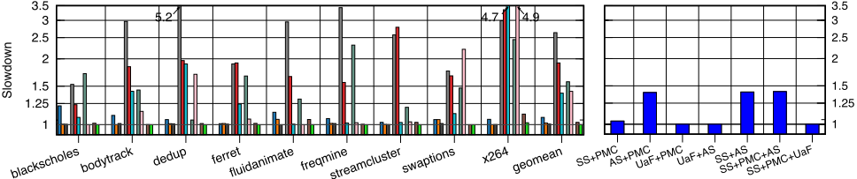
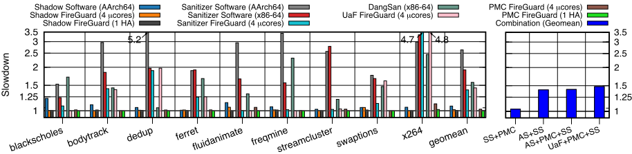
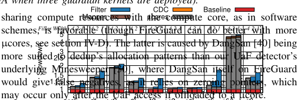
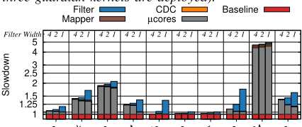
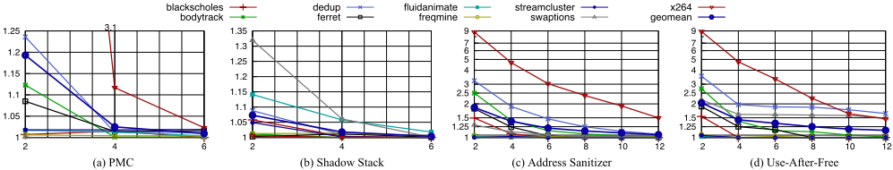
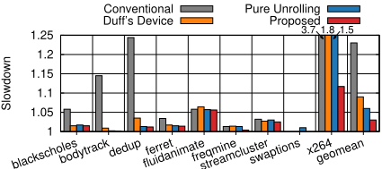

FireGuard: A Generalized Microarchitecture for Fine-Grained Security Analysis on OoO Superscalar Cores
FireGuard：面向乱序超标量处理器细粒度安全分析的通用微架构
简介
论文解决硬件辅助细粒度指令分析此前只在软件仿真或顺序核上验证、无法直接落入真实乱序（OoO）超标量核的问题。作者在 RISC-V BOOM 上实现 FireGuard：在 ROB/PRF/LSQ/FTQ 插入无缓冲只读旁路通道提取提交指令数据，按 commit 宽度并行部署 SRAM mini-filter 预筛，将 mapper 拆分为二级位图 allocator 与组播+NoC mesh 的分布式 fabric，并用高频/低频双时钟域加 handshake CDC 隔离 µ cores，避免关键路径与反压。系统在 Virtex UltraScale+ FPGA 上用 FireSim 启动完整 Linux，4 个 µ cores 下 PMC 开销 2.5%、shadow stack 2.1%、AddressSanitizer 39%、UaF 42%，检测延迟中位数小于 200ns。14nm post-layout 显示传输机制仅 0.043 mm²，估算集成到 M1-Pro、Kirin-960、i7-12700F 等商用 SoC 面积开销小于 1%。对团队而言，其 CDC 域划分、无缓冲旁路与 FPGA 全系统原型方法可借鉴，但主题与内存/互连 IP 无直接关联。
问题
现有硬件辅助细粒度指令分析（可编程地观测、过滤提交指令与访存事件并送入分析引擎）只在软件仿真或简单顺序核上实现，未证明能否在真实 OoO 超标量核中以可接受的时序、面积与性能开销落地；直接植入会在数据采集、过滤、分发、分析各环节遇到瓶颈与竞争，例如必须在 commit 前的窄时间窗内完成采集、过滤机制需高吞吐以避免 back-pressure 拖慢主核、通用分发会退化为不可扩展的广播。
方法
FireGuard 基于 Guardian Council 架构在 RISC-V BOOM 上实现：(a) 在 ROB、PRF、LSQ、FTQ 处加入只读 bypass 电路构成 buffer-free 数据前向通道，commit 时提取 PC、指令、操作数与访存/跳转地址，不在 execute 与 commit 之间新增缓冲；(b) 每个 commit 路径配一个以 opcode+funct 为索引的 SRAM mini-filter，组成超标量过滤器并行预筛并经 FIFO 对+仲裁器保序；(c) mapper 拆为二级位图 allocator（GID→SE→AE，支持 fixed/round-robin/block 调度）与组播通道+Manhattan mesh NoC 的分布式 fabric，避免广播；(d) 主核/过滤器/allocator 在高频域，µ cores 与 fabric 在低频域，采用 handshake-based clock-domain crossing；(e) 为 Rocket µ cores 增加 FIFO 管理 ISAX 并移入 MA 级以减少 data hazard；分析引擎可为 µ cores 或硬件加速器（HA），运行 PMC、shadow stack、AddressSanitizer、UaF 等 guardian kernels。
关键结果
4 个 µ cores 下 geomean 性能开销：PMC 2.5%、shadow stack 2.1%、AddressSanitizer 39%（12 个 µ cores 降至 6%）、UaF 42%（12 个 µ cores 降至 16%）；PMC 与 shadow stack 换成单个 HA 后开销降为 0%
软件基线开销：shadow stack 7.9%，AddressSanitizer 在 AArch64 为 163.5%、x86-64 为 91.5%；FireGuard 全面优于软件方案（x264 的 AddressSanitizer 与 Dedup 的 UaF 除外）
检测延迟：PMC 一致低于 50ns；shadow stack 最坏（x264）220ns；AddressSanitizer 中位数 <200ns 但尾部超过 2000ns（TLB 与 cache miss 在同一队列多次共现）
过滤宽度扩展性：4-width filter 可跟上 commit 宽度；AddressSanitizer 下 2-width 开销 16%、1-width 34%；标量 mapper 在 4-wide BOOM 上减速小于 0.5%
µ core 数量扩展：PMC 从 2 核 20% 降到 4 核 2%、6 核全部负载 <5%；shadow stack 2 核 7.3% 到 6 核 <1%（fluidanimate 1.8%）；UaF 12 核 geomean 1.16×（软件机制为 1.6×），但 x264 在 12 核下仍有 58.9% 开销
14nm（Synopsys Generic PDK）post-layout：SoC 2.91 mm²，BOOM 1.107 mm²，传输机制 0.043 mm²（filter 0.032、mapper 0.011），4 µ core FireGuard 共 0.287 mm²（BOOM 的 25.9%、SoC 的 9.86%）
商用 SoC 可行性估算：FireStorm/Cortex-A76/AlderLake-S 分别需 12/5/13 个 µ cores（每核开销 3.6%/9.6%/3.8%）；集成到 M1-Pro、Kirin-960（正文 IV-G 写作 Kirin-980）与 i7-12700F 的面积开销小于 1%
创新点
首个在真实乱序超标量处理器（RISC-V BOOM）上实现的硬件辅助细粒度指令分析微架构，此前工作基于软件仿真或顺序核。关键区别在工程化设计：buffer-free 前向通道（不在 execute 与 commit 间加缓冲）、与 commit 宽度匹配的超标量 SRAM 过滤器、无广播的二级位图分配 + NoC fabric 分发、双时钟域隔离，以及覆盖微架构、SoC、ISA 与编程模型的端到端系统（含针对 Rocket 的 ISAX 接口改造）。
团队参考意义
相关度级别：medium
命中能力域：2.2 RTL 设计与实现 | 2.6 仿真性能与加速器
理由：论文主题是 CPU 核的安全微架构，与团队的内存/互连 IP 业务无直接交集，2.1 架构域不命中；但其在 2.2 与 2.6 上有可借鉴的工程方法：为避免关键路径与反压采用的无缓冲只读旁路与读端口静态复用、高频/低频双时钟域加 handshake CDC 的域划分、按 commit 宽度并行化的 SRAM 查表过滤，以及 Chisel+FireSim 在 Virtex UltraScale+ 上启动完整 Linux 的全系统 FPGA 原型流程和 14nm Design Compiler/IC Compiler 2 post-layout 面积评估。这些模式对 IP 内增加观测/调试通道、隔离慢速管理逻辑、系统级原型验证有参考价值，但不直接命中团队核心技术栈，故评为 medium。
建议动作：作为方法参考存档
中文全文
arXiv:2504.01380v1 [cs.CR] 2025年4月2日
FireGuard: A Generalized Microarchitecture for Fine-Grained Security Analysis on OoO Superscalar Cores
FireGuard：一种面向 OoO 超标量处理器核细粒度安全分析的通用微架构
Zhe Jiang † Sam Ainsworth ∥ , Timothy Jones ¶
¶ 英国剑桥大学，∥ 英国爱丁堡大学
† 东南大学集成电路学院，国家EDA技术创新中心，中华人民共和国，
摘要 - 高性能的安全保障依赖于硬件支持。作为未来处理器安全的基础构建模块，面向细粒度指令分析的通用可编程支持已在文献中引起广泛关注。然而，要在真实的乱序（OoO）超标量处理器中加以实现，面临着在高度抽象的模拟器中无法探索的严峻挑战。我们详细阐述了在不引入关键路径或资源争用的情况下实现复杂可编程通路所面临的挑战。随后，我们提出 FireGuard——首个在真实 OoO 超标量处理器上实现的细粒度指令分析方案。我们构建了一个端到端系统，涵盖微架构、片上系统（SoC）、指令集架构（ISA）与编程模型。实验表明，我们的方案能够同时确保系统的安全性与性能，并具备并行可扩展性。我们考察了将 FireGuard 集成到现代 SoC 中的可行性：包括 Apple 的 M1-Pro、Huawei 的 Kirin-960 以及 Intel 的 i7-12700F，其引入的硅面积开销低于 1%。FireGuard 源代码仓库：https://github.com/SEU-ACAL/reproduce-FireGuard-DAC-25。
I. INTRODUCTION
随着计算能力的持续增长，现代系统越来越多地在共享平台上执行应用程序 [1], [2]。全球最大的电动汽车（EV）制造商比亚迪（BYD）的最新车载信息系统 [3]，允许在承载生命攸关关键负载的同时安装并执行验证程度较低的第三方负载，从而威胁整个系统的安全性与可信性 [4], [5]。类似地，Android 手机允许不可信的应用程序与安全攸关的银行软件共存 [6]。因此，现代系统需要具备以常开（always-on）且全面的方式分析、检测并缓解漏洞的能力。现有工作。常开且全面的安全分析依赖于硬件支持 [7]-[16]。当前的实现方案，例如 Arm 的 MTE [7] 与 BTI [17]，以及 Intel 的 LAM [18] 与 CET [19]，灵活性非常有限，攻击者只需转移攻击目标即可将其绕过。此外，针对最新威胁的部署需要漫长的开发周期，导致漏洞暴露窗口期过长。
硬件辅助的细粒度指令分析 [20]-[24] 提出了一种新范式：在处理器核中添加观测通道，对执行过程（例如提交的指令、访存操作和函数调用）进行过滤与分析，分析则在可编程分析引擎（例如微控制器、加速器或 FPGA）中进行。借助可重构性与并行性，这类方法能够自适应地覆盖广泛的攻击类型。
挑战。已有研究通过软件仿真 [21], [22], [24] 或在简单的顺序执行（in-order）处理器上开展 [23], [25]。这些工作既未展示如何将分析能力构建到真实的乱序（OoO）超标量处理器核中，也未考虑在不彻底重构处理器核设计、且开销可接受的前提下这是否可行。当我们尝试将这样一种机制构建到真实处理器核中时，在处理流水线的每一个阶段——从数据收集与过滤到分发与分析——都遇到了瓶颈与争用。典型的编程模型 [21] 要求完全的通用性：任何乃至所有指令都可以被同时监控，从中选取任何乃至所有数据，并一次性发送给多项分析。在处理器核内部，这些数据必须在一个狭窄的时间窗口内被收集：为了反映指令顺序，收集须发生在提交（commit）时刻而非执行（execute）时刻，但又必须在数据被覆盖之前完成。虽然对于与当前运行的分析无关的数据可以进行过滤缩减，但如果每条指令都可能被监控，那么决定哪些指令被处理的机制就必须具备高度并行和高吞吐能力，以避免背压（back-pressure）拖慢处理器核。即便通过过滤已经减少了数据量，分发环节所要求的通用性也使得我们难以在不借助不可扩展广播的情况下，将数据同时发送给多个分析引擎。
贡献。我们提出了首个用于硬件辅助细粒度指令分析的微体系结构 FireGuard，其实现于 RISC-V BOOM [26] 之上。为此，我们提出如下内容：
我们使用 Chisel 实现了 FireGuard，并借助 FireSim [27] 将其部署在 Virtex UltraScale+ FPGA 上。我们启动完整的 Linux 系统，并部署了采用多种安全方案的不同工作负载：自定义性能计数器（PMC）[21]、影子栈 [28]、AddressSanitizer [29] 以及释放后使用（UaF）检测 [30]。结果表明，采用四个分析引擎即足以运行 PMC（性能开销为 2.5%）、影子栈（开销为 2.1%）、AddressSanitizer（开销为 39%，使用 12 个引擎时可降至 6%）以及 UaF 检测（开销为 42%，使用 12 个引擎时为 16%）。通过进一步集成硬件加速器，这些开销可以被完全消除。我们评估了将 FireGuard 构建到现代 SoC 中的可行性：包括 M1-Pro、Kirin-960 和 i7-12700F，所需硅面积不足 1%。
II. FINE-GRAINED INSTRUCTION ANALYSIS
尽管关于细粒度指令分析的各项研究在顶层思想上趋于一致，但它们之间的架构和应用程序接口（API）略有差异。我们采用 Guardian Council [21] 作为通用化的示例，在其基础上构建 FireGuard，并讨论其他方案的可行性。
Guardian Council。该架构的特点是一个能够分析任意指令类型的通用前端。它在计算核心的提交阶段插入一条数据转发通道，从程序执行中收集数据（例如操作码、操作数）。事件过滤器对所有观测到的数据执行预检查，筛选出相关信息（取决于正在运行的分析），并通过一个映射器将其发送给分析引擎。映射器根据每个分析引擎上正在运行的分析（即 guardian kernel）来选择目标。利用传递过来的信息，各引擎并行运行 guardian kernel，验证安全性并发现漏洞。
![Fig. 1: Overview of FireGuard (Mini-F: Mini-Filter; GID: Group Index 1 ; HA: Hardware Accelerator; SE: Scheduling Engine) : a buffer-free data-forwarding channel extracts the main core's execution events; b a superscalar filter pre-checks extracted events, identifying relevant instructions and selecting channels for analysis; c an allocator associates an SE to each kernel to distribute contents, and d a distributed fabric network transmits contents to the µ cores or HAs; e kernels running on µ cores or HAs fetch contents and validate their security.](assets/p216/figures/fig_1.png)
其他架构。Guardian Council 与类似机制 [22]-[24] 的关键区别在于后端的分析引擎。它部署了大量微控制器规模的核（µ core），以并行方式运行用户可编程的验证（这类验证通常运行在传统的主核上）。这种设计通过同时利用验证任务内部以及多个独立任务之间的并行性，实现了高效、可更新且可升级的分析；同时还利用了这样一个事实：与乱序（OoO）超标量主核相比，µ core 消耗的硬件资源要少多个数量级——而后者所必须实现的高单线程性能对 µ core 而言是不必要的。部署到现场可编程门阵列（FPGA）[23] 或多个大型分析引擎 [22], [24] 上则涉及类似的分发挑战。
III. FIREGUARD
We show the concept of fine-grained instruction analysis is feasible by building a real system (FireGuard) upon the the Guardian Council architecture. Figure 1 fleshes out the data-forwarding channel, filter, mapper and analysis engines, with a careful redesign allowing practical implementation that can handle generality at each stage 2 .
To do so, we integrate simple read-only bypass circuits at various locations within the main core (figure 1 a ) to extract data while avoiding new buffers between execute and commit. These forward on debug data associated with committed instructions for detailed analysis. Since the design only involves minor microarchitectural changes to the main core via adding read-only interfaces, it keeps invasion into the main core low and avoids adding significant hardware overhead. With that, we deploy a superscalar set of SRAM-based mini-filters to handle high commit widths in parallel (figure 1 b ). It can be programmed to be sensitive to any arbitrary group of instructions, and guarantees that filtering can be completed while the data is still available in the core. To timely deliver the data to the analysis engines, we divide the mapper into a scalable allocator (figure 1 c ) and a distributed fabric network (figure 1 d ). The allocator associates a Scheduling Engine (SE) to each guardian kernel
2 We partition the microarchitecture into two clock domains. The main core, along with its associated modules (e.g., L1-cache), the data-forwarding channel, the filter, and the allocator, are within a high-frequency domain driven by a fast clock source. This avoids any resulting slowdown caused by dataforwarding, filtering, and allocating activities. The more parallel µ cores and fabric network are within a low-frequency domain driven by a slower clock source, with handshake-based clock-domain crossing. This ensures energy efficiency and prevents the simple µ cores from becoming the critical path.
![Fig. 2: Data-forwarding channel, using PRFs as an example (blue lines: data-forwarding paths; red lines: filtering paths; gray lines: control paths; DP Sel: Data Path Selection) : a commit paths from the ROB are hooked, forwarding retired instructions to mini-filters and storing the PRF access addresses in temporary registers; b minifilters pre-check the forwarded instructions, sending control signals to PRF controllers when PRF data is selected; c the data-forwarding channel preempts the controllers and feeds the addresses temporarily stored; d the read data is routed back for in-depth analysis.](assets/p216/figures/fig_2.png)


instructions designed for efficient, hazard-minimizing design patterns.
A. Data-forwarding channel
数据转发通道部署在主核的提交阶段，负责提取、选择并传输与每条退休指令相关的调试数据。由于相关数据已经存储在主核内部的不同位置，我们设计了一种无缓冲的实现方式（即在乱序执行与顺序提交之间不增加任何新的中间存储），在重排序缓冲区（ROB）、物理寄存器堆（PRF）、加载存储队列（LSQ）和取指目标队列（FTQ）处插入旁路电路。对于过滤器选中的任意指令，该通道在提交期间传输其 PC 地址、指令数据、操作数数据以及存储器地址和跳转地址，避免读取未被选中的信息。这些插入点覆盖了所有存储算术逻辑单元输出的位置，能够以最小的争用实现细粒度的可见性。
PRF 示例。图 2 以 PRF 为例展示了该微架构，将 ROB、过滤器与 PRF 相连。在 ROB 一侧，我们增加了挂接到每次提交的逻辑，用于将退休指令传输给微型过滤器（mini-filter），同时还增加了存储每条指令所访问 PRF 索引的地址寄存器（图 2 a）。在退休后的下一个周期，微型过滤器识别所传输指令的组索引（GID），并根据编程设置选择数据（第 III-B 节）。如果 PRF 数据被选中，则会回传一个控制信号，抢占 PRF 控制器（图 2 b）。
PRF 的读控制器在发射队列（用于执行指令）与微型过滤器之间进行静态多路复用（图 2 c）。当 Mini-Filter [x] 有需要时，它对 Read Ctrl [x] 拥有优先访问权，从而使数据能够被立即读取并传输（图 2 d），避免在释放物理寄存器时出现任何缓冲或延迟。这意味着试图使用同一端口的指令将被延迟到下一个周期，从而产生争用 3。
B. Event Filter
The event filter pre-checks all retired instructions. If instructions are selected for analysis, it returns their Group Indexes (GIDs) for the mapper and programs the data-forwarding channel to select data. We give a superscalar implementation that enables simultaneous filtering of all instructions, ensuring the filter keeps up with the main core.
3 In LDQ, STQ, and FTQ, similar microarchitectures are deployed to obtain memory access or jump addresses. Unlike PRFs, where forwarded data can be stored at arbitrary addresses, the tops of these queues consistently hold the data associated with the most recently retired instructions. When a mini-filter decides to forward a load, store, or jump address, the bypass circuits directly transmit from the relevant queue's top, avoiding contention.
Figure 1 b shows its design, including a set of mini-filters, FIFO queues, and an arbiter. A mini-filter is connected to each superscalar commit path of the ROB. Each is indexed by the instruction opcode from the data-forwarding channel, and returns programmed GIDs and selects debug data from the chosen channel for instructions analyzed. Filtered contents are buffered into paired FIFO queues, allowing a shared arbiter to arrange the output into sequence.

(a) Paired FIFO queues.
(c) Transmission ordering
Mini-filters. Mini-filters use a SRAM-based look-up table (figure 3). The address (10-bit) is an index formed of the concatenated RISCV opcode (lower 7 bits) and function code (higher 3 bits) for all possible instructions, and stores the mapper's GID and the desired data paths (PRF, LSQ and/or FTQ) for each instruction. For instance, 0x03 and 0x23 index RISC-V lb and sb , respectively. We route the instructions' opcodes and function codes to the address port of the SRAM's read interface, and direct the read data to the data-forwarding channels and the mapper, assisting in data selection and allocation 4 .
C. Mapper
映射器（mapper）根据所配置的并行化策略将过滤后的数据包路由到各个引擎，同时还支持分析引擎之间的数据交换，从而为守护内核（guardian kernel）实现复杂的并行方案。它是完全可编程的，允许任何指令流向所有感兴趣的守护内核，并针对每个守护内核各自调度到一个分析引擎核心。图1c和d展示了映射器的微体系结构，我们将其划分为一个可扩展的分配器（allocator）以及其后的分布式交换网络（fabric network）。映射器使FireGuard的处理从超标量转变为标量：与过滤器不同，它每个周期只处理一个数据包。这很少会妨碍4宽BOOM的性能（我们观察到性能下降不到0.5%）5。
分配器（Allocator）。分配器使用二级间接位图（2-level indirection bitmap）在各分析引擎之间分配数据包。图5展示了该分配器，其中包括一个分发器（distributor）和一组调度引擎（Scheduling Engine，SE）。分发器管理GID与SE之间的位图，决定在数据包传输过程中应激活哪些SE。SE与守护内核一一对应，每个SE还维护自身与分析引擎之间的另一个位图，将过滤后的数据包分配给执行同一守护内核的分析引擎组。
在分发器中，每个GID被分配一个SE Bitmap寄存器，寄存器中的各个位用于索引对该特定GID感兴趣的SE。例如，如果GID为3的数据包应发送到SE 0，则SE Bitmap[3]中的位0被置位（图5a）。SE使用一个调度电路、两个调度寄存器（PT reg和
4 我们放置一对FIFO队列来连接各微型过滤器（mini-filter），以缓冲过滤后的内容（图4(a)）。尽管这些过滤后的内容是由各微型过滤器并行产生的，但它们必须按顺序发送，与其提交顺序保持一致，因为某些分析可能对程序顺序敏感（例如影子栈 shadow stack [28]）。为此，我们对过滤后的内容进行封装（图4(b)）。如果一条指令被丢弃，则会生成一个无效数据包，并同样被推入FIFO队列，以保持FIFO末端的顺序。仲裁器使用有限状态机按序传输数据包（图4(c)），有效数据包消耗一个时钟周期，而无效数据包则被跳过。
5 即便如此，对于更强大的核心，可以考虑采用超标量映射器。为实现这一点，需要对交换网络（fabric）和分配器都进行修改，包括复制通信通道和SE。还必须部署额外的仲裁器来管理竞争，例如当多个数据包被发送到同一安全引擎时。

| Instruction | Target Queue | Descriptions |
|---|---|---|
| count rd, rs1 | Input/ Output | Count number of packets buffered in message queue rs1, returning it to rd. |
| top rd, rs1 | Input | Return bitfields [rs1+63:rs1] of the first element to rd. |
| pop rd, rs1 | Input | Remove the first element and return its bitfields [rs1+63:rs1] to rd. |
| recent rd, rs1 | Input | Return bitfields [rs1+63:rs1] of the most recently removed element to rd. |
| push rs1 | Output | Push packet rs1 for transmission. |
| Instruction | Target Queue | Descriptions |
CT reg），以及一个AE Bitmap（Analysis Engine Bitmap，分析引擎位图）寄存器。该
调度电路实现了多种策略，例如固定（fixed）、轮转（roundrobin）和块模式（block mode）[21]，其中最后一种策略用于在转向下一个 µ core 之前，将所有消息发送至同一个 µ core 直至其被填满，适用于消息局部性较为重要的场景，例如影子栈（shadow stack）。当调度电路被激活时，PT reg（previous target，前一目标）用于生成当前目标（current target），该目标先被缓存在 CT reg 中，待数据包传输完成后再移入 PT reg。CT reg 的值会设置 SE 的 AE Bitmap 中相应的目标位（图 5 b）。由所有 SE 返回的 AE Bitmap 通过或门组合以形成决策，从而选择性地向各分析引擎进行广播。Fabric 网络。Fabric 网络具有一个半双工多播（1-to-N）信道和一个全双工路由（N-to-N）信道。多播信道选择性地广播数据包，而路由
信道则允许各检查器之间相互传输数据包。
多播信道使用多路选择器将来自事件过滤器（event filter）的数据包引导至各分析引擎中的消息队列。所有多路选择器均由分配器（allocator）控制，以调节每个数据包的传输与屏蔽。路由信道采用基于曼哈顿网格 [31]-[34] 的片上网络（NoC）网状拓扑。每个路由器具有五个双向端口，分别与位于其北、南、东、西方向的其他路由器以及一个分析引擎相连。
D. ISA and Programming Model
The analysis engines run guardian kernels concurrently on µ cores, finding vulnerabilities. To handle the frequent hardware-software interactions, we use a FIFO-based programming model implemented into RISC-V Rocket cores via custom instructions. As these instructions take up a large fraction of total µ core cycles, we integrate FIFOmanagement instructions using a new tight-coupling arrangement; Rocket's existing ISAX interface, which executes custom instructions post-commit, caused too many data hazards. We also redesign our instruction set to better support high-throughput programming design patterns that minimize hazards further.
ISA. We connect the message queues to the fabric network in the mapper, allowing the µ core to receive packets via an input queue and Main core send packets through an output queue, in order to support pipelined parallelism strategies such as used in the shadow stack [21]. Our queue controller, with status registers and software drivers, allows guardian kernels to manage the message queues using ISAX [35] custom instructions (see table I). Top , push and pop were inherited from the original design [21]; count was added to aid in loop unrolling, and recent to allow accessing extra information about an element already processed: for example, the PC is only needed on a detected error in AddressSanitizer, and is discarded otherwise.
| 0 | 1 |
|---|---|
| Core | 4-Width, out-of-order SonicBOOM [26], @3.2GHz 128-Entry ROB, 96-Entry IQ, 32-entry LDQ/STQ, |
| Pipeline | 128 Int/FP Phy Registers, 2 Int ALUs, 1 FP/Multi/Div ALU, 2 MEM, 1 Jump Unit, 1 CSR Unit |
| Branch Predictor | TAGE algorithm, 256-entry BTB, 32-entry RAS, 6 TAGE table with 2 - 64 bits history Memory |
| L1 ICache | 32KB, 8-way, 8 MSHRs |
| L1 DCache | 32KB, 8-way, 8 MSHRs |
| L2 Cache | 512KB, 8-way, 12 MSHRs |
| LLC | 4MB, 8-way, 8 MSHRs |
| Memory | 16 GB DDR3 @1066MHz, max 32 requests FireGuard and Interconnects |
| Event Filter | 4-width, 16-entry FIFO |
| Mapper | 4 SEs, 8-entry CDC, fabric @1.6GHz |
| Analysis Engine | In-order Rocket µ core [35], 5-stage pipeline, @1.6GHz, 32-entry message queues, no FPU |
| L1 Cache | 4KB, 2-way for both I- and D-Cache |
| Interconnect | Memory bus @ 1GHz, others @ 3.2GHz |
| 0 | 1 |
Microarchitecture Support. RISC-V Rocket runs custom instructions post-commit [35]. The routing to the ISAX peripheral blocks the core for at least 3 cycles for each instruction and can extend up to 13 cycles in the presence of data hazards and contention [36]. This causes data hazards and large slowdowns when such instructions are as commonly used as our queue operations. We redesigned Rocket's interface to move it into the MA stage 6 of the pipeline (figure 6), multiplexing between the ISAX unit and the load-store unit.
IV. EVALUATION
实验设置 为了全面评估 FireGuard 的可行性，我们将 FireGuard 构建到了 RISC-V 核心中。BOOM 主核增加了数据前递通道、过滤器（filter）和映射器（mapper）；Rocket µ 核则被配置为安全引擎，运行不同的安全防护机制，即内核（kernels）。我们使用 Chisel（v3.4）实现了该微架构，并使用 Vivado 工具链（v2021.2）对寄存器传输级（RTL）进行了综合。生成的网表通过 FireSim [27], [37] 部署到 Virtex UltraScale+ FPGA 上，以模拟表 II 中的设置。
我们启动了 Linux（内核版本 v5.7.0）并运行 Parsec [38]，使用以下内核执行 simmedium 数据集：带边界检查的定制性能计数器（PMC）[21]、AddressSanitizer [29]、Use-after-Free（UaF）检测器 7 以及影子栈 [28], [39]。
A. Performance Overhead
Figure 7(a) shows the slowdown experienced by the main core while executing kernels in FireGuard, in comparison to softwarebased counterparts (implemented via LLVM). In all instances, FireGuard is configured with four µ cores. Hardware Accelerators (HAs) within FireGuard are also presented for PMC and shadow stack.
6 The MA stage was chosen as it is the first stage in the pipeline that is non-speculative, simplifying the implementation of the state-destructive pop but otherwise minimizing hazards, such that only one bubble is required for an instruction immediately following the custom instruction that uses its output.
7 Our design takes MineSweeper [30] and uses analysis engines to find loads and stores to quarantined regions, to find as well as prevent bugs.
Slowdow
dedup ferret GPR
core
blackscholes bodytrack addr data
CSR
fluidanimate freqmine streamcluster swaptions OP2
fluidanimate freqmine
ID|EX
ALU
Data Forwarding
L1D$
addr data
IFU
geomean ISAX IFC
Mux ALL
LSU
IF|ID
EX|MA
MA|WB
MSQ_Ctrl Input Queue Output Queue
Stau_reg_0
Stau_reg_1
Stau_reg_n
(b) Connecting the message queues
Controller;
IFU: Instruction Fetch Unit; Mini-D: Mini-Decoder):
For the ISAX interface (IFC), Ctrl: Message Queue
full-duplex microarchitecture handles

requests and responses independently, with a mini-decoder and multiplexer. In the request channel, a mini-decoder directs an ISAX request
to the fluidanimate freqmine message queues' MSQ Ctrl or status registers (via streamcluster swaptions x264
an APB bridge). In the response channel, a multiplexer geomean selects
returned data,
dedup ferret fluidanimate freqmine x264
geomean SS+PMC
routing it to the commit stage and the EX stage using forwarding logic for handling data hazards.
blackscholes bodytrack Shadow Software (AArch64)
dedup fluidanimate freqmine ferret
Fig.
7:
Performance results for streamcluster Sanitizer Software (AArch64)
fluidanimate freqmine swaptions swaptions streamcluster

(4
cores or
1 HA for each kernel)
running
Parsec with
different/combined safeguards
(AS:
![AddressSanitizer; SS: Shadow Stack; in (b), SS is implemented as a HA when three guardian kernels are deployed). (a) FireGuard v.s. software techniques (b) Combining safeguards blackscholes bodytrack dedup ferret fluidanimate freqmine streamcluster swaptions x264 geomean Fig. 7: Performance results for FireGuard (4 µ cores or 1 HA for each kernel) running Parsec with different/combined safeguards (AS: AddressSanitizer; SS: Shadow Stack; in (b), SS is implemented as a HA when three guardian kernels are deployed).](assets/p216/figures/fig_10.png)
Chisel (v3.4) and synthesized the RTL using Vivado toolchains (v2021.2). The generated netlist was deployed on Virtex UltraScale+ FPGAs using FireSim [27], [37], emulating the setup in table II. We booted Linux (with kernel v5.7.0) and executed Parsec [38], running the simmedium dataset with kernels: Custom Performance Counter with bounds check (PMC) [21], AddressSanitizer [29], Useafter-Free detector (UaF) 7 and shadow stack [28], [39]. A. Performance Overhead Figure 7(a) shows the slowdown experienced by the main core while executing kernels in FireGuard, in comparison to softwarebased counterparts (implemented via LLVM). In all instances, FireGuard is configured with four µ cores. Hardware Accelerators (HAs) within FireGuard are also presented for PMC and shadow stack. Using 4 µ cores is sufficient to run a PMC with overheads of 2.5% geomean, shadow stack at 2.1%, AddressSanitizer at 39%, or UaF at 42%. By replacing the µ cores with a single HA, the overhead of PMC and shadow stack can be reduced to 0%. Software techniques give 7.9% overhead for shadow stack, and 163.5% for AArch64 and 91.5% for x86-64 architectures on AddressSanitizer 8 . FireGuard consistently outperforms software techniques, with the exception of Using 4 µ cores is sufficient to run a PMC with overheads of 2.5% geomean, shadow stack at 2.1%, AddressSanitizer at 39%, or UaF at 42%. By replacing the µ cores with a single HA, the overhead of PMC and shadow stack can be reduced to 0%. Software techniques give 7.9% overhead for shadow stack, and 163.5% for AArch64 and 91.5% for x86-64 architectures on AddressSanitizer 8 . FireGuard consistently outperforms software techniques, with the exception of x264 with AddressSanitizer, and Dedup on UaF. The former is due to the exceptionally high volume of load and store instructions executed in x264, where four µ cores fail to keep up to such a degree that 8 AddressSanitizer is not supported for RISC-V in either GCC or LLVM, so the comparison focuses on AArch64 and x86-64. For shadow stack, support is absent for both RISC-V and x86-64, so we compare against AArch64.
blackscholes bodytrack dedup ferret fluidanimate freqmine streamcluster swaptions x264 geomean Fig. 9: Cumulative bottlenecks v.s. filter widths (on 4µ core Sanitizer), measured by the proportion of time queues are full. may occur only after the UaF access if offloaded to a µ core. Combining kernels. Figure 7(b) reports the slowdown experienced by the main core while executing multiple kernels simultaneously. The kernel that incurs the most slowdown dominates the performance,

main core, decreasing the number of instructions, other kernels can persist in their function with reduced computational overhead. B. Detection Latency but slowdowns are not multiplied. This is benefited from the parallel execution of the kernels. When one kernel halts the execution of the main core, decreasing the number of instructions, other kernels can persist in their function with reduced computational overhead.
To examine the detection latency, we inject erroneous input at various locations in the core, e.g., the jump unit, the LDQ and the STQ, etc, simulating e.g., jump to a hijacked PC and access a freed memory address. For each workload, 50-100 attacks are generated, and the detection latencies are shown in figure 8. PMC experiences the lowest detection latency, consistently detecting attacks under 50 ns . Due to its complex block parallelism model [21], the shadow stack sees marginally higher latencies than PMC. In the worst-case scenario (x264), a latency of 220ns is observed. For AddressSanitizer, though the median is always < 200ns, the tail exceeds 2,000nsThis occurs when TLB and cache misses co-occur on many accesses in the same queue: our accurate modeling of TLB misses in FireSim causes worst-case delays to be higher than in the original work [21]. As with the Guardian Council [21], we mitigate security concerns by ensuring that the guardian kernels cannot be terminated or reconfigured, and system calls not be executed, until no in-flight checks remain. B. Detection Latency To examine the detection latency, we inject erroneous input at various locations in the core, e.g., the jump unit, the LDQ and the STQ, etc, simulating e.g., jump to a hijacked PC and access a freed memory address. For each workload, 50-100 attacks are generated, and the detection latencies are shown in figure 8. PMC experiences the lowest detection latency, consistently detecting attacks under 50 ns . Due to its complex block parallelism model [21], the shadow stack sees marginally higher latencies than PMC. In the worst-case scenario (x264), a latency of 220ns is observed. For AddressSanitizer, though the median is always < 200ns, the tail exceeds 2,000ns. This
C. Analysis of Microarchitecture Bottlenecks
Figure 9 decomposes overheads in a 4µ core FireGuard when
ALL
Response Channel
Mini-D
L1I$
Slowdown OP1
(b) Combining safeguards x264 geomean
are techniques
A for each kernel) running Parsec with different/combined safeguards (AS: d as a HA when three guardian kernels are deployed).
freqmine streamcluster swaptions

chains
II.
cale+
[38],
, Use-
mance
n core
, Fire-
tware-
(HAs)
ck.
f 2.5%
ead of
r UaF
niques
rch64
ion of
ecuted
due to
that
more
ftware
being
ector's
which
ienced
ance,
ously.
arallel
of the
d loads
VM, so
64.
support main core, decreasing the number of instructions, other kernels can persist in their function with reduced computational overhead. B. Detection Latency occurs when TLB and cache misses co-occur on many accesses in causes worst-case delays to be higher than in the original work [21].
To examine the detection latency, we inject erroneous input the same queue: our accurate modeling of TLB misses in FireSim at F.
| Processors (Performance Core only) | Processors (Performance Core only) | Processors (Performance Core only) | Processors (Performance Core only) | Processors (Performance Core only) |
|---|---|---|---|---|
| Core (SoC) | BOOM [26] | FireStorm [42] (M1-Pro) | Cortex-A76 [43] (Kirin-960) | AlderLake-S [44] (i7-12700F) |
| Peak Freq. | 3.2GHz | 3.2GHz | 2.8GHz | 4.9GHz |
| Tech. | 14nm | 5nm | 7nm | 10nm |
| Area | 1.11 mm 2 | 2.53 mm 2 | 1.23 mm 2 | 7.30 mm 2 |
| @14nm | 1.11 mm 2 | 22.55 mm 2 | 3.61 mm 2 | 22.63 mm 2 |
| IPC | 1.3 | 3.79 | 2.07 | 2.83 |
| Normalized Throughput | 1 | 2.92 | 1.27 | 3.35 |
| FireGuard Elements | FireGuard Elements | FireGuard Elements | FireGuard Elements | FireGuard Elements |
| Filter Width | 4-way | 8-way | 4-way | 6-way |
| # µ cores | 4 | 12 | 5 | 13 |
| Overhead | 0.29 mm 2 | 0.81 mm 2 | 0.35 mm 2 | 0.85 mm 2 |
| (% / Core) | (25.9%) | (3.6%) | (9.6%) | (3.8%) |
| An Independent Kernel for All Cores | An Independent Kernel for All Cores | An Independent Kernel for All Cores | An Independent Kernel for All Cores | An Independent Kernel for All Cores |
| Overhead (% / SoC) | 0.29 mm 2 (9.86%) | 6.10 mm 2 (0.47%) | 1.23 mm 2 (0.57%) | 6.67 mm 2 (0.99%) |
| Processors (Performance Core only) | Processors (Performance Core only) | Processors (Performance Core only) | Processors (Performance Core only) | Processors (Performance Core only) |
Hardware Overhead
STQ, etc, simulating e.g., jump to a hijacked PC and access a freed memory address. For each workload, 50-100 attacks are generated, and the detection latencies are shown in figure 8. PMC experiences the lowest detection latency, consistently detecting attacks under 50 ns . Due to its complex block parallelism model [21], the shadow C. Analysis of Microarchitecture Bottlenecks Figure 9 decomposes overheads in a 4µ core FireGuard when running AddressSanitizer using varying event-filter widths (1, 2, or 4), highlighting the accumulated bottlenecks stemming from different elements. A 4-width event filter is as wide as the core's commit, We study hardware overhead of the microarchitecture by performing a physical implementation of a 4µ core FireGuard at the post-layout stage using Synopsys 14 nm Generic PDKs. The RTL is synthesized with Design Compiler (v2022.12), and the netlist is placed and routed via IC Compiler 2 (v2022.12).
various locations in the core, e.g., the jump unit, the LDQ and the
stack sees marginally higher latencies than PMC. In the worst-case scenario (x264), a latency of 220ns is observed. For AddressSanitizer, though the median is always < 200ns, the tail exceeds 2,000nsThis occurs when TLB and cache misses co-occur on many accesses in the same queue: our accurate modeling of TLB misses in FireSim causes worst-case delays to be higher than in the original work [21]. As with so can always keep up. As the width decreases, overhead increases significantly, from 16% at 2-width to 34% at 1-width. The geomean overhead from the filter jumps from 16% (2-width) to 34% (1-width). D. Analysis of Scalability Figure 10 shows the slowdown with varying µ core count. The area of the SoC is 2.91 mm 2 , where the BOOM is 1.107 mm 2 and each Rocket is 0.061 mm 2 . The total area of FireGuard's transport mechanisms is 0.043 mm 2 (3.88% and 1.48% of the BOOM and the SoC): the filter occupies 0.032 mm 2 and the mapper 0.011 mm 2 . Building a 4µ core FireGuard upon a BOOM thus needs 0.287 mm 2 , i.e., 25.9% and 9.86% of the BOOM and the SoC.
4), highlighting the accumulated bottlenecks stemming from different comparable to the performance of LLVM's software mechanism. With four µ cores, the geomean overhead is reduced to 2.1%, decreasing G. Feasibility Analysis
the Guardian Council [21]，我们通过
comparable to the performance of LLVM's software mechanism. With four µ cores, the geomean overhead is reduced to 2.1%, decreasing to 0.4% when using six µ cores. With six µ cores, all workloads can be executed with < 1% slowdown, except fluidanimate (1.8%). AddressSanitizer. Figure 10(c) is heavier than (a) or (b). Using two µ cores results in 86% overhead, still outperforming software parallelize away; for example, dedup sees flat overheads due to extra memory-allocation work. The geomean reaches 1.16 × by 12 µ cores, lower than the 1.6 × that is achieved by software mechanisms [40]. E. Analysis of Programming Models Figure 11 shows the performance overhead when executing PMC using different programming models (section III-D) with 4 µ cores. By being aware of the remaining hazards in the µ cores, we can improve performance significantly. A conventional single-iteration loop suffers from frequent data hazards due to both queue count checks and pop instructions. Duff's device [41] reduces hazards on size checks, made possible by the queue count instruction, and pure unrolling helps further, by removing hazards for pop instructions if the queue is relatively full. A hybrid strategy, using unrolling when possible and Duff's device otherwise, is uniformly best.
blackscholes dedup
bodytrack ferret
Fig. 10: Slowdown when using varying numbers of
fluidanimate streamcluster
freqmine swaptions x264
cores for guardian kernels
(x-axis: number of
cores; y-axis: slowdown)


(section IV-A). However, three workloads (bodytrack, dedup, x264) exhibit over 100% overhead. This is due to the extremely high volume of load and store instructions that necessitate analysis. Even with 12 µ cores, x264 continues to endure a 58.9% slowdown, while all other workloads see negligible overhead (less than 1%). practical. Moreover, the energy overhead would be even lower, since the majority of FireGuard operates within a low-frequency domain. V. CONCLUSION
UaF. Figure 10(d) is the heaviest workload. As well as monitoring all loads and stores, the extra work to quarantine and release memory allocations only when safe [30] causes some overheads that do not parallelize away; for example, dedup sees flat overheads due to extra memory-allocation work. The geomean reaches 1.16 × by 12 µ cores, lower than the 1.6 × that is achieved by software mechanisms [40]. E. Analysis of Programming Models We have presented FireGuard, a microarchitecture for fine-grained instruction analysis. To make the design practical for deployment, we presented a buffer-free data forwarding channel, a superscalar event filter and a broadcast-free mapper. Feasibility analysis shows FireGuard can be integrated into modern SoCs with less than 1% increase in area. In summary, comprehensive in-core analysis is practical and efficient to build into real cores and SoCs.
图 11 展示了在 4 个 µ 核心上使用不同编程模型（第 III-D 节）执行 PMC 时的性能开销。通过掌握 µ 核心中仍然存在的冒险，我们可以显著提升性能。传统的单次迭代循环由于队列计数检查和 pop 指令而频繁遭遇数据冒险。Duff's device [41] 借助队列计数指令减少了大小检查方面的冒险；纯展开（unrolling）则更进一步，当队列相对较满时可消除 pop 指令的冒险。一种混合策略——在可能时使用展开、否则使用 Duff's device——在所有情况下均为最优。
VI. 致谢
我们感谢匿名审稿人提出的有益反馈。本工作得到国家重点研发计划（Grant No. 2024YFB4405600）、国家自然科学基金（Grant No. 62472086、62204036）以及江苏省基础研究计划（Grants No. BK20243042）的资助。
F. Hardware Overhead
我们通过使用 Synopsys 14 nm Generic PDK 在版图后（post-layout）阶段对 4µ 核心的 FireGuard 进行物理实现，来研究该微架构的硬件开销。寄存器传输级（RTL）代码使用 Design Compiler（v2022.12）进行综合，网表通过 IC Compiler 2（v2022.12）完成布局布线。
直观上看，这一观察结果偏离了低开销设计的目标。但这仅仅是因为原型 BOOM 核心与商用设计相比规模较小，而 Rocket 核心却非常庞大——已有闭源的顺序执行 64 位核心仅需一半的资源即可实现 [17]。为了提供更全面的见解，我们将在下文对真实世界的片上系统（SoC）进行详细分析。
该 SoC 的面积为 2.91 mm²，其中 BOOM 为 1.107 mm²，每个 Rocket 为 0.061 mm²。FireGuard 传输机制的总面积为 0.043 mm²（分别占 BOOM 和 SoC 的 3.88% 和 1.48%）：其中 filter 占 0.032 mm²，mapper 占 0.011 mm²。因此，在 BOOM 之上构建 4µ 核心的 FireGuard 需要 0.287 mm²，即分别占 BOOM 和 SoC 的 25.9% 和 9.86%。
G. Feasibility Analysis
| 10 Processors (Performance Core only) | 10 Processors (Performance Core only) |
|---|---|
| cores 8 cores Core (SoC) Computer | 12 BOOM [26] FireStorm [42] (M1-Pro) Cortex-A76 [43] (Kirin-960) AlderLake-S [44] (i7-12700F) REFERENCES Architecture News , vol. 42, no. 3, pp. 457-468, 2014. |
| Peak Freq. 3.2GHz 3.2GHz 2.8GHz 4.9GHz Tech. 14nm 5nm 7nm 10nm Area 1.11 mm 2 2.53 mm 2 1.23 mm 2 7.30 mm 2 @14nm 1.11 mm 2 22.55 mm 2 3.61 mm 2 22.63 mm 2 [1] A. Burns and R. I. Davis, 'A survey of research into mixed criticality systems,' vol. 50, no. 6. ACM New York, NY, USA, 2017, pp. 1-37. [2] J. Woodruff, R. N. Watson, D. Chisnall, S. W. Moore, J. Anderson, | Peak Freq. 3.2GHz 3.2GHz 2.8GHz 4.9GHz Tech. 14nm 5nm 7nm 10nm Area 1.11 mm 2 2.53 mm 2 1.23 mm 2 7.30 mm 2 @14nm 1.11 mm 2 22.55 mm 2 3.61 mm 2 22.63 mm 2 [1] A. Burns and R. I. Davis, 'A survey of research into mixed criticality systems,' vol. 50, no. 6. ACM New York, NY, USA, 2017, pp. 1-37. [2] J. Woodruff, R. N. Watson, D. Chisnall, S. W. Moore, J. Anderson, |
| IPC 1.3 3.79 2.07 2.83 Normalized Throughput 1 2.92 1.27 3.35 B. Davis, B. Laurie, P. G. Neumann, R. Norton, and M. Roe, 'The cheri capability model: Revisiting risc in an age of risk,' ACM SIGARCH | IPC 1.3 3.79 2.07 2.83 Normalized Throughput 1 2.92 1.27 3.35 B. Davis, B. Laurie, P. G. Neumann, R. Norton, and M. Roe, 'The cheri capability model: Revisiting risc in an age of risk,' ACM SIGARCH |
| FireGuard Elements Filter Width 4-way 8-way 4-way 6-way [3] Zecar, in https://zecar.com/reviews/ , 2023. | FireGuard Elements Filter Width 4-way 8-way 4-way 6-way [3] Zecar, in https://zecar.com/reviews/ , 2023. |
| # µ cores 4 12 5 13 Overhead (% / Core) 0.29 mm 2 (25.9%) 0.81 mm 2 (3.6%) 0.35 mm 2 (9.6%) 0.85 mm 2 (3.8%) An Independent Kernel for All Cores Overhead (% / SoC) 0.29 mm 2 (9.86%) 6.10 mm 2 (0.47%) 1.23 mm 2 (0.57%) 6.67 mm 2 (0.99%) [4] S. Checkoway, D. McCoy, B. Kantor, D. Anderson, H. Shacham, S. Sav- age, K. Koscher, A. Czeskis, F. Roesner, and T. Kohno, 'Comprehensive experimental analyses of automotive attack surfaces,' in 20th USENIX security symposium (USENIX Security 11) , 2011. [5] T. Wehbe, V. Mooney, and D. Keezer, 'Hardware-based run-time code | # µ cores 4 12 5 13 Overhead (% / Core) 0.29 mm 2 (25.9%) 0.81 mm 2 (3.6%) 0.35 mm 2 (9.6%) 0.85 mm 2 (3.8%) An Independent Kernel for All Cores Overhead (% / SoC) 0.29 mm 2 (9.86%) 6.10 mm 2 (0.47%) 1.23 mm 2 (0.57%) 6.67 mm 2 (0.99%) [4] S. Checkoway, D. McCoy, B. Kantor, D. Anderson, H. Shacham, S. Sav- age, K. Koscher, A. Czeskis, F. Roesner, and T. Kohno, 'Comprehensive experimental analyses of automotive attack surfaces,' in 20th USENIX security symposium (USENIX Security 11) , 2011. [5] T. Wehbe, V. Mooney, and D. Keezer, 'Hardware-based run-time code |
| 10 Processors (Performance Core only) | 10 Processors (Performance Core only) |
[21]
S.
Ainsworth and T.
M. Jones,
'The guardian council:
Parallel pro-
2016, pp. 38-49.
VI. ACKNOWLEDGEMENT
We appreciate the anonymous reviewers for their helpful feedback. This work is supported by the National Key Research and Development Program (Grant No. 2024YFB4405600), the National Natural Science Foundation of China (Grant No. 62472086, 62204036) and the Basic Research Program of Jiangsu (Grants No. BK20243042). grammable hardware security,' in Proceedings of the Twenty-Fifth International Conference on Architectural Support for Programming Languages and Operating Systems , 2020, pp. 1277-1293.
证据核查
1 条证据未在原文中核对到